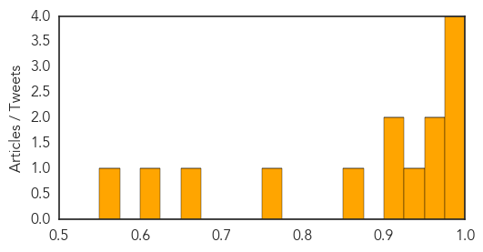

Mumps
30-Day Web Trend
6 alerts, 0 warnings

30-Day Twitter Trend
0 alerts, 0 warnings

Article Locations

Article Confidences

Top Articles:
Top Tweets:
-
No tweets found for Aug 25, 2015
Dengue Fever
30-Day Web Trend
0 alerts, 0 warnings

30-Day Twitter Trend
3 alerts, 0 warnings

Article Locations

Article Confidences
Top Articles:
- 0.996
- Delhi sees 253 new dengue cases in just a week as number of victims hits 530
- 0.990
- Rayalaseema Under Dengue Attack
- 0.983
- Tainan hardest hit by dengue, records 4 deaths
- 0.981
- AIIMS to Start Serological Tests to Identify Prevalent Strains of Dengue Virus in India
- 0.972
- Five more test positive for dengue in Ghatampur
- 0.963
- Dengue cases in Negros Occidental on the rise
- 0.937
- Google Shutters Flu Trends Website, Will Send Data to Researchers
- 0.919
- Dengue mosquitos bite during the day and breed in clean, fresh water
- 0.915
- Speculations Arise Over the Prevention Strategies on Viral Diseases in Thane, Mumbai
- 0.868
- Chikungunya Panic in Ganjam
- 0.774
- Delhi dengue scare: Total 530 cases reported this year; 477 in August only
- 0.669
- Malaysia General Business Sports and Lifestyle News
- 0.600
- Tabuk City LGU launches community action vs dengue
- 0.559
- Anti-dengue spray begins in city
Top Tweets:
-
No tweets found for Aug 25, 2015